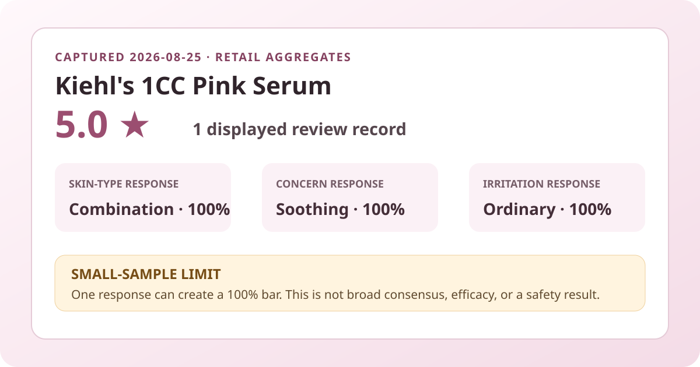
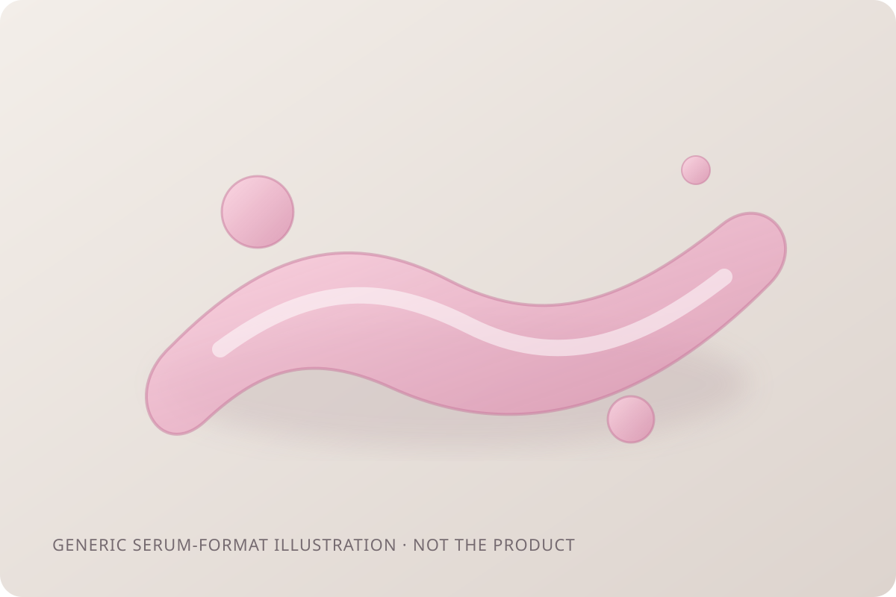

Data captured August 25, 2026. This article uses only the retailer's displayed product title, ranking position, aggregate rating, review count, poll responses, and dated price display. No individual review, reviewer name, product photograph, or user photograph is reproduced or translated. I did not test the product.

The short version: Kiehl's 1CC Pink Serum ranked first in the captured skincare sales list, but its feedback base was brand new: 5.0 out of 5 from one displayed review record. The three visible polls each showed one response at 100%. Those numbers describe one early record and should not be read as efficacy, safety, or broad shopper consensus.
The verified fact is narrow: at capture, the retailer displayed a 5.0 average and one review record. It is reasonable to call that one positive rating within the retailer's system. It is not reasonable to call it a consensus. With a denominator of one, there is no diversity of experience to compare, no stable estimate of how future ratings may cluster, and no protection against the next record changing the headline.
The difference between ranking and evidence matters here. Sales rank describes recent commercial activity inside one retailer and category. It can be affected by launch timing, promotion, inventory, advertising, gifts, and shopper curiosity. Review volume describes how much feedback has accumulated. A product can therefore sit at number one in sales while still having almost no usable review history. That is exactly the tension in this snapshot.
The page did not separately show the shares for five, four, three, two, and one stars. Although a 5.0 average from one record strongly constrains what likely happened, this analysis does not convert that into an asserted star distribution. The retailer may round averages, and the goal here is to report what was displayed rather than reverse-engineer unshown fields.
The only displayed skin-type response selected combination skin. This says who was represented in the tiny snapshot, not who will benefit.
The only displayed concern response selected soothing. It identifies an interest or shopping goal, not a measured reduction in redness, irritation, or inflammation.
The visible response used the middle option rather than the gentle option. Even if interpreted literally, one response cannot establish safety or forecast another person's tolerance.
These are three separate questions and their percentages should never be added. The page did not expose a separate respondent count for each poll. Because the product displayed only one review record overall, the responsible reading is that every poll is extremely thin. “100%” sounds comprehensive, but here it means unanimity without breadth.

The storefront calls this a serum, which supports only a format label. This analysis did not handle or apply it, so it does not verify color, scent, viscosity, slip, tack, absorption time, residue, pilling, or compatibility with sunscreen and makeup. The pink-toned local illustration is an editorial device for the format and should not be used to judge the actual formula.
If finish matters, test it within the routine you already use. Layering behavior can change with amount, waiting time, humidity, sunscreen film, and makeup formula. A retail average—even a much larger one—would not replace that context.
On the capture date, the Korean listing showed a ₩59,000 reference price and an option-dependent starting display of ₩46,610. A separate cart-coupon message showed ₩44,750. The product title referred to both planned and single-item options, so these figures are anchors rather than a clean unit-price comparison.
Before comparing value, confirm whether the selected option is a single 30 ml item or a promotional set, what gifts are actually included, whether the coupon applies, and what appears at checkout. Regional listings may use different names, packs, formulas, sellers, prices, taxes, and shipping terms. A temporary discount or number-one rank does not establish product fit.
The captured Korean headline marketed the item as “1CC Pink Serum” and used collagen-boosting language. Those phrases are product and campaign language, not proof that the cosmetic increases collagen in skin, changes anatomy, or produces a clinical outcome. This article does not repeat those ideas as verified effects.
No complete region-specific ingredient list was independently captured for this analysis. I therefore do not estimate active percentages or claim that the product is fragrance-free, alcohol-free, essential-oil-free, non-comedogenic, pregnancy-compatible, or suitable for eczema, rosacea, acne, allergy, or another medical concern. Check the current label for the exact market and ask a qualified professional when a condition or treatment makes the choice higher stakes.
Start by separating curiosity from need. If your existing serum already works, a fresh number-one ranking is not evidence that switching will improve your result. Decide what gap you are trying to fill, then check whether the current label and directions actually address that use without relying on the name.
For reaction-prone skin, introducing one new product at a time and first trying a small area can make a concerning response easier to notice, though it cannot guarantee safety. Follow the directions on the product you receive. Stop use if a concerning reaction occurs and seek qualified advice when appropriate.
Finally, revisit the data later. The most useful future change will not be whether the average remains exactly 5.0; it will be whether the review base grows enough to show a stable distribution and whether the polls gain breadth. A launch snapshot should be allowed to mature before it carries much decision weight.
Combination skin was the only displayed skin-type response, but the product had only one review record. That is representation, not evidence of superior performance.
The only displayed irritation response selected the middle option rather than gentle. One response cannot establish safety or predict individual tolerance.
No. It summarizes one retail rating and does not measure collagen, hydration, redness, firmness, or another outcome.
No. It is a generic code-drawn format illustration, not the formula or a use-test photograph.
Not necessarily. Verify the selected option, promotional contents, coupon eligibility, seller, formula, and checkout total.
Kiehl's 1CC Pink Serum was the highest-ranked valid unpublished product in the captured Olive Young Korea skincare sales list. The product and review surfaces agreed on the basic facts: 5.0 stars and one displayed review record. The three polls showed combination skin, soothing concern, and ordinary irritation responses at 100%.
The defensible conclusion is still “too early.” The listing is commercially prominent, but the review base is not mature enough to support a broad recommendation, a stable star distribution, a gentleness claim, or any efficacy claim. Use this snapshot to frame verification questions, not to replace them.
← All reviews · Rankings · Skin-poll guide · Methodology
Published by The K-Beauty Data Desk · Aggregate data captured 2026-08-25. No individual review, name, product photo, or user photo is reproduced or translated, and I did not test the product. I received no free product and am not paid or approved by the brand. Check the dated source listing.
Data basis: the live Olive Young Korea skincare sales-ranking and product/review screens captured 2026-08-25. The product title, ranking position, rating, review count, price display, and poll shares are source facts. Interpretation and cautions are editorial.